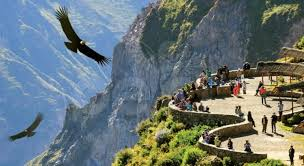

Atracciones Turísticas y Experiencias

El Cañón del Colca, ubicado en el sur de Perú, en la región de Arequipa, es uno de los destinos turísticos más impresionantes del país. Es un lugar de belleza natural sobrecogedora, famoso por ser uno de los cañones más profundos del mundo y por ser el hogar del majestuoso cóndor andino.
- El Vuelo del Cóndor Andino: La principal atracción del cañón es la Cruz del Cóndor, un mirador natural donde los visitantes pueden observar a estas magníficas aves en su hábitat. Es un espectáculo inolvidable. Los cóndores, con una envergadura de hasta 3 metros, aprovechan las corrientes térmicas ascendentes de la mañana para elevarse, ofreciendo un avistamiento garantizado y cercano.
- Pueblos y Tradiciones Andinas: A lo largo del cañón se encuentran pintorescos pueblos andinos que han conservado sus costumbres y tradiciones. Lugares como Chivay, el principal centro de servicios turísticos, y Yanque, son conocidos por sus iglesias coloniales, sus mercados artesanales y las danzas tradicionales que se presentan en las plazas.